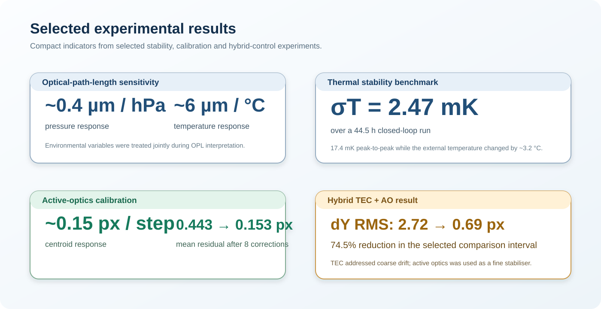

Thermal stability
Over a 44.5 h experiment, the controlled temperature had σT = 2.47 mK and a 17.4 mK peak-to-peak span while the external laboratory changed by about 3.2 °C.
Measured, modelled, proposed
Performance values are presented with their evaluation interval and evidence status. Later diagnostic reports can refine—or supersede—earlier interpretations.
Over a 44.5 h experiment, the controlled temperature had σT = 2.47 mK and a 17.4 mK peak-to-peak span while the external laboratory changed by about 3.2 °C.
Characterised data gave approximate response indicators of 0.4 µm/hPa and 6 µm/°C. These are configuration-specific empirical sensitivities, not universal constants.
dY RMS decreased from 2.72 px to 0.69 px—74.5%—for the stated comparison interval. This is not a full-run zero-lock claim.
A 9.47 h plateau achieved dY RMS = 0.380 px, with 90.76% of samples within ±0.5 px.
Radial RMS = 0.497 px and 58.1% within a 0.5 px radius, with fewer control actions. The mean dY bias remained −0.5837 px and strict ±0.10 px dY occupancy was 0%.
Against live centroiding on one dataset: correlation 0.983 in dX and 0.998 in dY; RMSE 0.027–0.029 px. It has not yet been validated as the closed-loop feedback signal.

R² = 0.972, RMSE = 1.52, MAE = 1.16 on the reported training data. Useful for development; insufficient by itself to establish predictive generalisation.
A dual 30 mm side-vent fan concept is proposed after rotation tests showed approximately +0.64 px dY and −0.32 µm OPL change in the first ~28 min. The observation does not prove that a camera gradient caused the drift; staged fit, vibration and flow tests are required.
Open design summary →